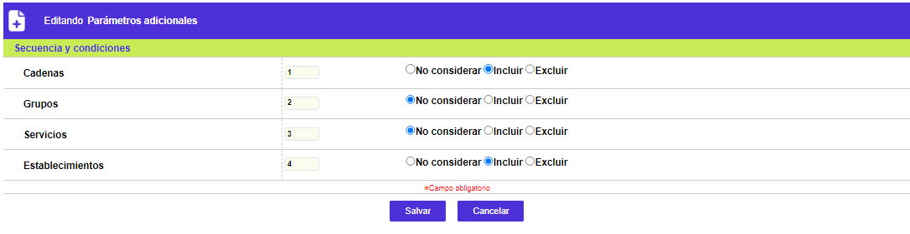

|
Esquemas de puntajes - Parámetros adicionales |
Parametros adicionales: En este espacio la entidad define, de una parte, los lineamientos especiales correspondientes al mecanismo de redención de puntos y, de otro lado, la secuencia y condiciones de orden y si aplica o no la fuente de generación de los puntos. Es importante tener en cuenta que la relación esquema puntajes/mecanismo de redención es uno a uno, o en otras palabras, es posible asociar un único mecanismo de redención por esquema.
A través de los botones Salvar o Cancelar, se regresa al formulario principal de Esquemas de puntajes.

Secuencia y condiciones: Dado que la transacción es la esencia o causa para que el sistema genere o no puntos para un producto, y esa transacción es realizada en un comercio, la entidad dispone de este conjunto de campos que le permiten determinar si tiene en cuenta, para otorgar o no puntos adicionales bien sea incluyendo o excluyendo, a los establecimientos, los tipos de servicio, grupos y cadenas (siendo estas tres últimas características de los establecimientos). El sistema al momento de asignar los puntos evalúa en el orden señalado si debe o no tener en cuenta cada uno de las variables. Si la entidad requiere que un mismo producto acumule puntos en más de un esquema se requiere no considerar Servicio, Grupos y Cadenas.
|
No considerar |
Si la entidad marca este campo indica que no existe ningún tipo de acuerdo por cadena, grupo, servicio o establecimiento, desactivándose el subtab correspondiente a las opciones marcadas. |
|
Incluir |
En este campo la entidad señala que existe un plan o tratado especial con determinada cadena, grupo, servicio o establecimiento de acuerdo con el esquema de puntaje, los que deberán ser relacionados en sus correspondientes subtabs y servirán de base al sistema para otorgar puntos adicionales solo a las transacciones realizadas en esos establecimientos, y/o en establecimientos que posean esos mismo tipos de servicio, cadenas o grupos. |
|
Excluir |
Indica que determinadas cadena, grupo, servicio o establecimiento no hace parte del esquema de puntaje diseñado por la entidad, los cuales deben ser relacionados dentro del subtab correspondiente, lo que indica que la cadena, grupo, servicio y/o establecimiento que no se encuentre aquí relacionado es tenido en cuenta de acuerdo con lo parametrizado. |